Selección de conservas premium, directo del océano a tu hogar
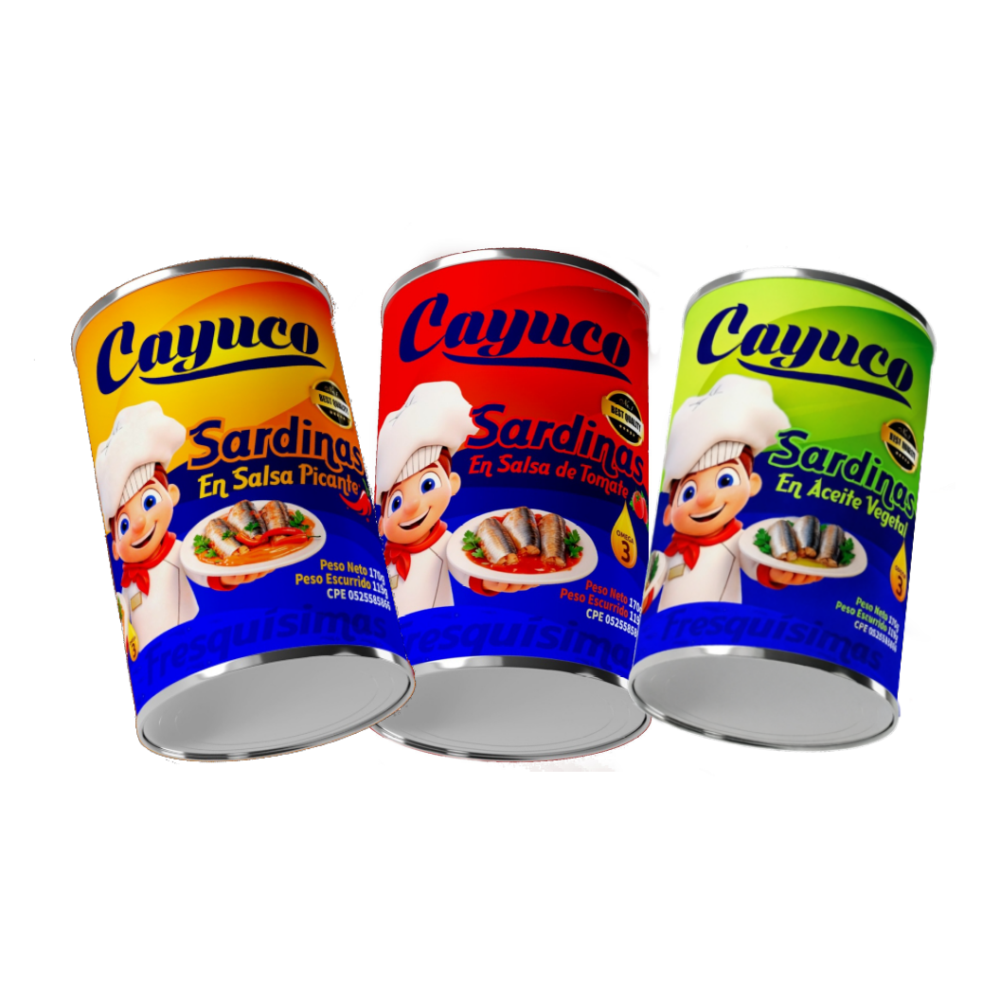
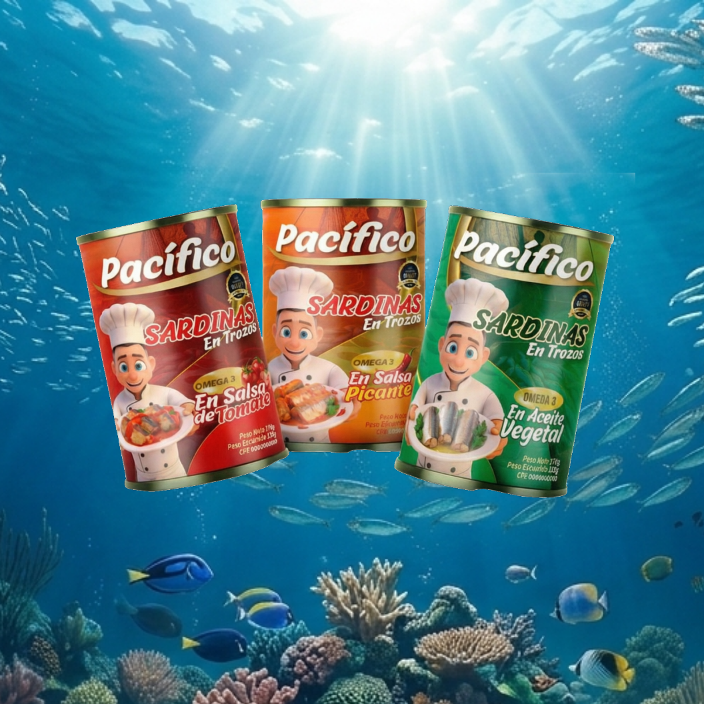
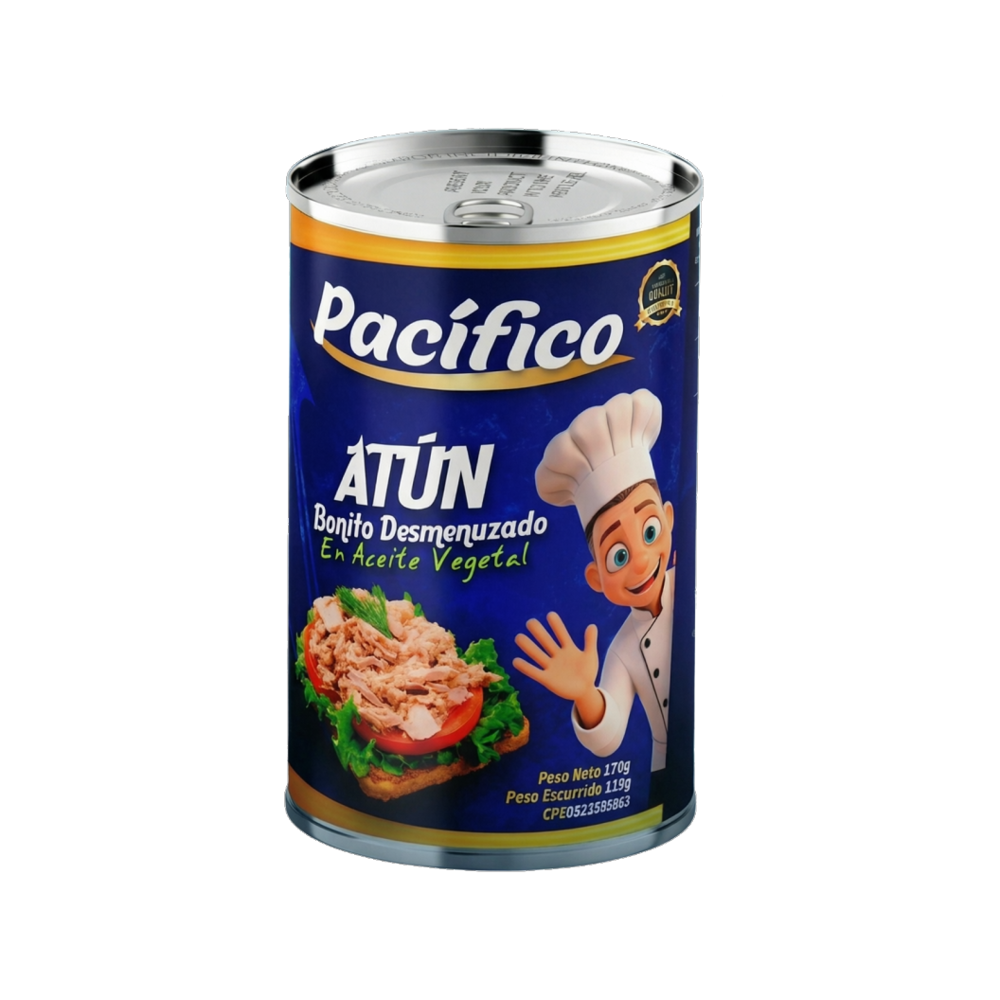
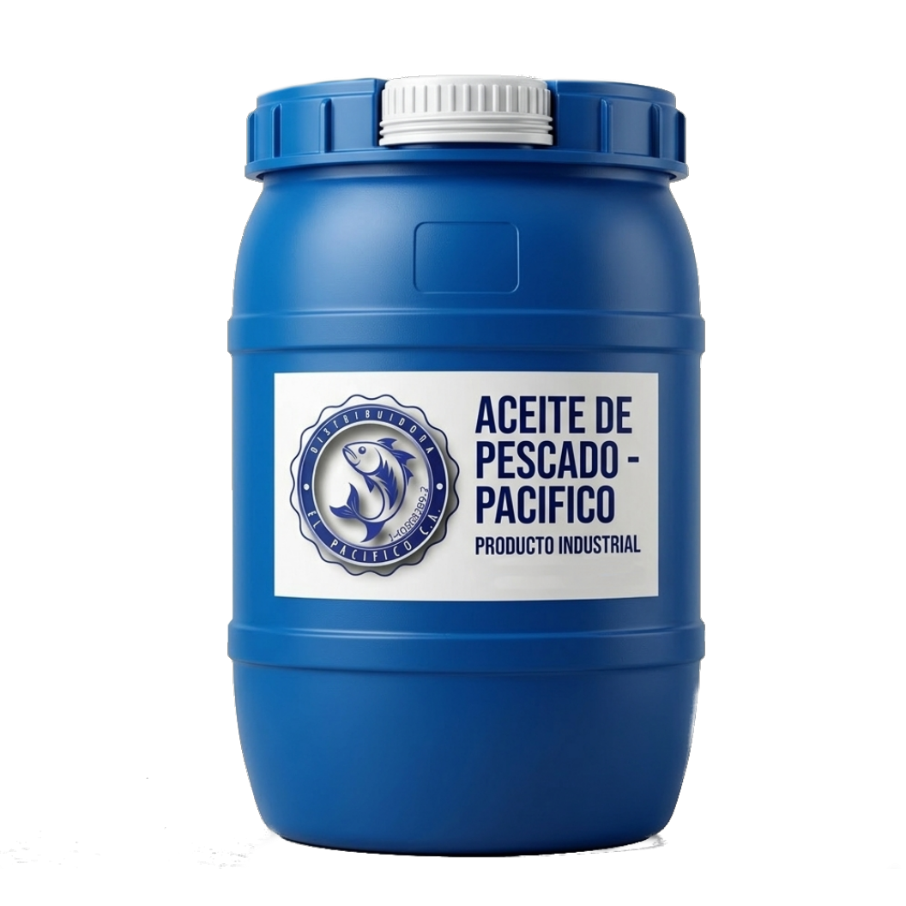
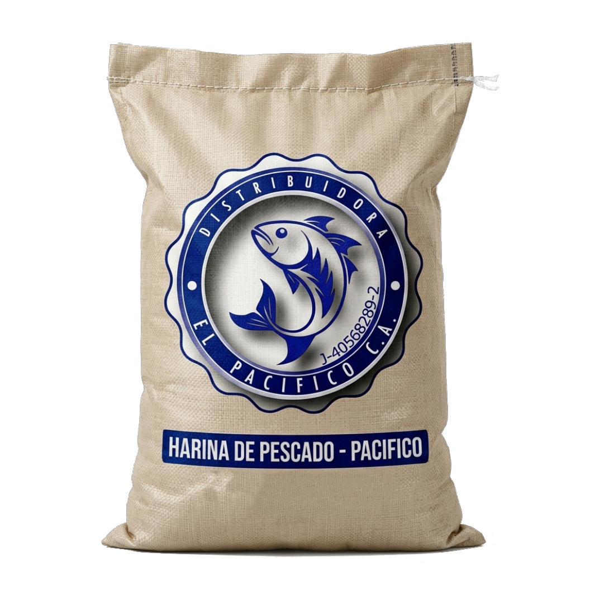
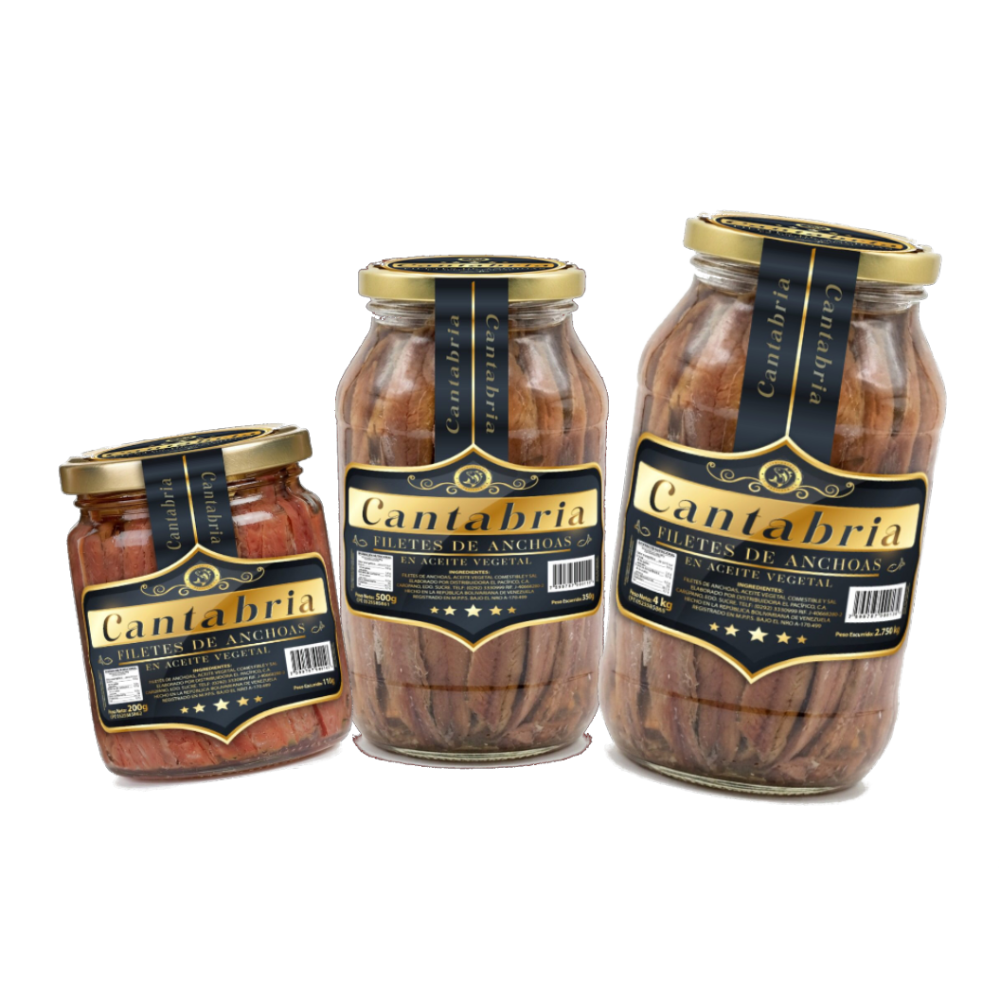
Filetes de anchoa en aceite, presentaciones de 200g, 500g y 4kg.
Ver más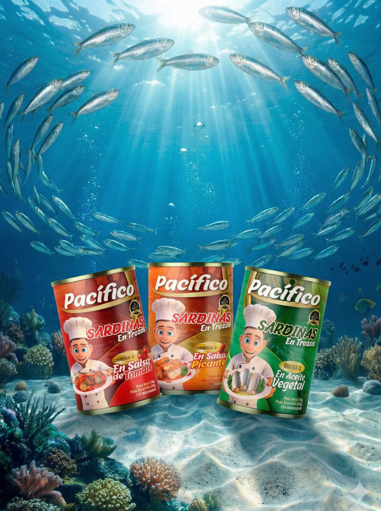
Comenzamos como una pequeña distribuidora familiar en la costa venezolana y hoy llevamos la frescura del mar a todo el país.
Trabajamos con pescadores locales que respetan el ciclo marino
Seleccionamos manualmente cada pieza para nuestras conservas
Máxima frescura: envasamos en menos de 24 horas
Llegamos a todos los rincones de Venezuela
Seleccionamos los mejores pescados directamente de pescadores locales, garantizando frescura y sabor. Nuestras conservas mantienen todas las propiedades del mar.
Procesos artesanales y envasado inmediato para llevar a tu mesa la esencia del océano.
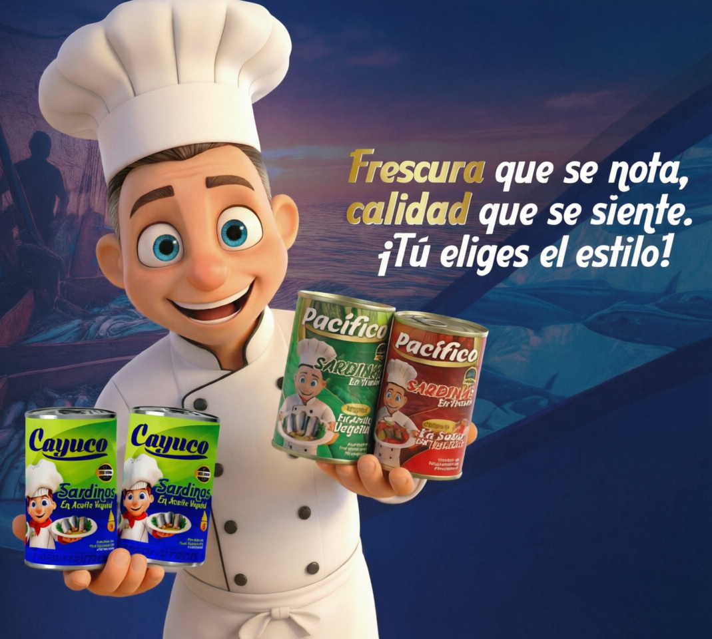
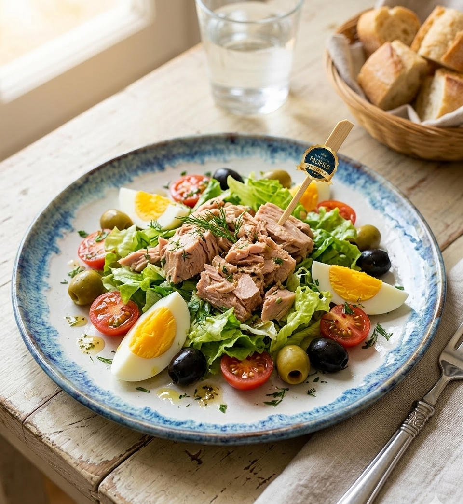
Mezcla nuestro atún con lechuga, tomate, huevo y aceitunas.
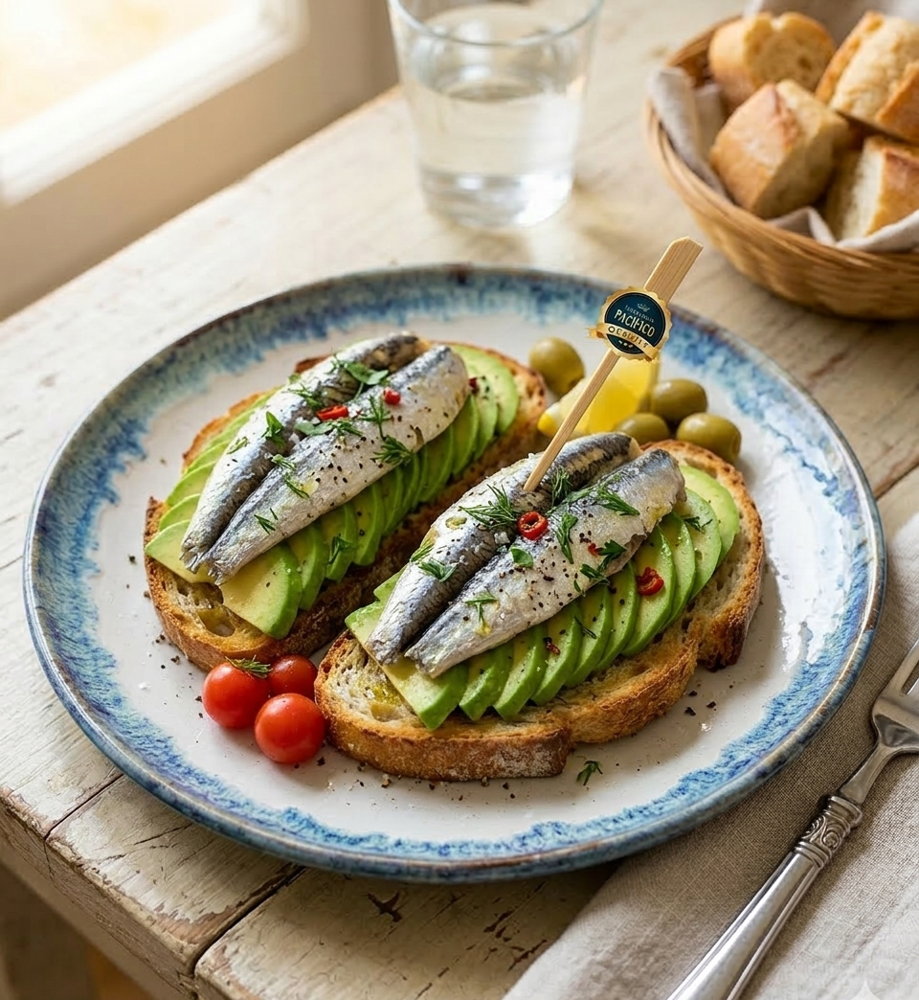
Sardinas Cayuco sobre pan crujiente con aguacate.
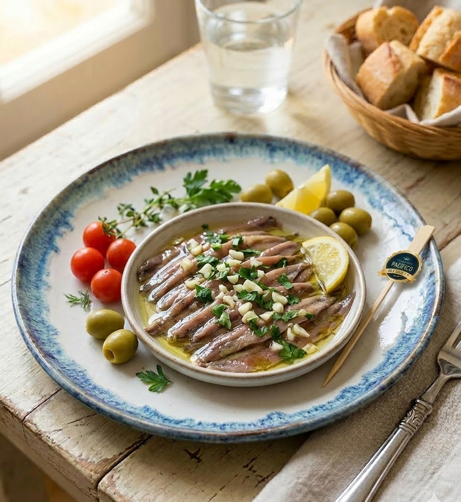
Filetes de anchoa Cantabria con ajo y perejil.